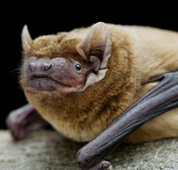
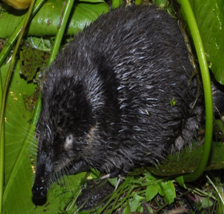
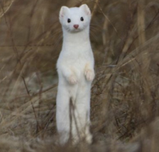
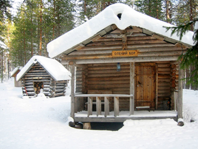

Калязин
Калязин - небольшой город в Тверской области, расположенный на берегу Угличского водохранилища (Волга), в 190 километрах к северу от столицы России. Первые упоминания о поселении на месте современного города датированы 12 веком. Калязин образовался в 1699 году слиянием двух старинных слобод, разбогатевших на волжской торговле - здесь к великой реке выходил путь из Москвы и Владимира.
В Калязине преобладает умеренно-континентальный климат. Зимы продолжительные и умеренно морозные. Лето умеренно теплое и недолгое. Самый теплый месяц Июль - средняя температура +20,6 градусов. Самый холодный Январь - средняя температура -12 градусов. Среднее годовое количество осадков составляет 605 мм.
В Калязине очень красивая природа, с реками Волга и Жабня и лесами по берегам. Водные просторы Угличского водохранилища смягчили климат города, но оставили погоду по-прежнему непредсказуемой. Летом всегда надо быть готовым к дождю, зимой — к обильному снегопаду. Лучший весенний месяц — май, когда все вокруг утопает в мареве цветущих садов. В начале июня самые нетерпеливые открывают купальный сезон, который длится до августа. В конце лета на смену купальному приходит сезон грибной. Как правило, в конце декабря лед на Волге уже достаточно прочен, и по нему без опаски можно дойти до колокольни. В середине апреля на реке начинается ледоход.
Крот – это животное, которое относится к классу млекопитающие.

Длина тела 61-64 мм, хвоста - 46-54 мм. Крыло узкое и длинное. Окраска верха палево-рыжая или коричневая. Низ тела несколько светлее. Поселяются эти мыши в дуплах старых лип, тополей, образуя небольшие группы из 30-35 особей. Днем они спят, свесившись вниз головой, а в сумерки и ночью проявляют активность. В течение ночи совершают два вылета на кормежку: первый после захода солнца, а второй на рассвете. Охотятся рыжие вечерницы на лесных полянах, опушках леса. Они быстро и маневренно летают, ловко минуют встречающиеся на пути препятствия даже в темноте. Питаются летающими насекомыми: жуками, бабочками. В поисках добычи используют эхолокацию.
Русская выхухоль — маленький зверёк, похожий на крота, из отряда насекомоядных.
Внешность животного выхухоль впечатляет своей необычностью. Это довольно крупный зверь с телом 18-22 см в длину, таким же по длине хвостом и массой до 520 г. Хвост выхухоли покрыт слоем роговых чешуек, а вдоль них по верху ещё и жесткими волосками, которые образуют киль. Самыми благоприятными для обитания выхухоли являются пойменные водоёмы и старицы с водным зеркалом площадью до гектара и глубиной до 5 м. Желательно наличие сухих участков невысоких обрывистых берегов с обилием водной растительности и пойменным лесом на берегу. Ласка – это самое мелкое животное из отряда хищные.
Длина тела самца не превышает 26 см, а вес не более 250 г, размеры самочки и того меньше – длина ее тела не больше 21 см, а вес – 108 г. Ласки красивые и стройные животные, у них удлиненное тело, короткие лапки, не очень длинный хвост, голова небольшая, а ушки маленькие и закругленные. Окраска шерсти обычно зависит от времени года. Зимой она однотонная белая, а летом двухцветная – спинка и верхняя часть головы коричневые, а живот и грудка белые. В некоторых регионах у ласок окраска шерсти не меняется и всегда остается двуцветной. Ласка успешно охотится на многих мелких животных. Чаще всего ее добычей становятся мыши, но она может поймать и хомяка, тушканчика, крота, крысу и крольчонка. Также может охотиться на птиц, ящериц, лягушек, змей и насекомых. Нередко ласки совершают набеги на курятники, где воруют цыплят и молодых кур.
Олений бор
Олений бор рядом с деревней Мицеево (Калязинский район). Это кемпинг с потрясающей природой, где есть даже пляж. Но главное, что привлекает особенно семьи с детьми – это возможность “пообщаться” с живыми оленями, покормить их с рук.